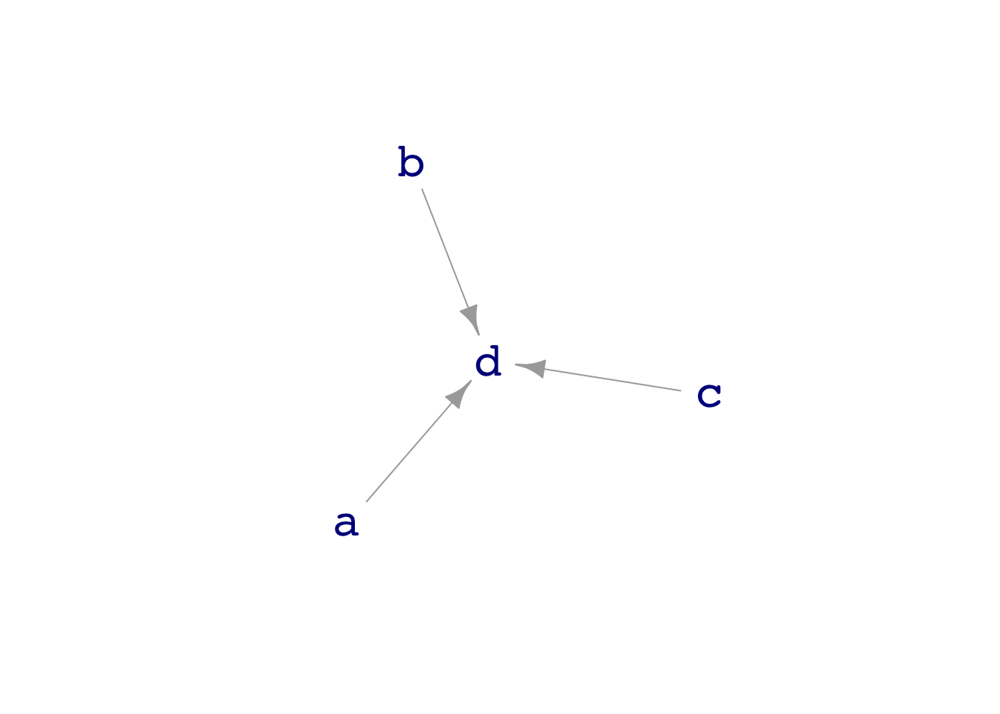

dag_draw(dag04)
Covariates
Prof. Danny Kaplan
October 14, 2022
Read a DAG to determine which covariates to include in a model to reduce (out-of-sample) prediction error.
Calculate amount of in-sample mean square error reduction to be expected with a useless (random) covariate. (Residual sum of squares divided by residual degrees of freedom.)
TBD
We’ve talked about explanatory variables and the response variable. Sometimes, we have one or a few explanatory variables that we care about, but recognize that others may be playing a role in the formation of the outcome. The explanatory variables that we don’t care about are called covariates. A covariate is nothing more than an explanatory variable in which we don’t have a direct interest.
Today’s lesson is about whether using covariates can change the prediction error, either for better (a smaller prediction error) or for worse (a bigger prediction error).
To illustrate, consider dag04 in which multiple variables contribute to an outcome:
It might seem evident that, to predict d, using a, b, and c as explantory variables will produce narrower prediction intervals than using just one or two of the variables. We can confirm this intuition—we’ll do it with out-of-sample RMS error.
Training <- sample(dag04, size=500)
mod1 <- lm(d ~ b, data = Training)
mod2 <- lm(d ~ a + b + c, data = Training)
Testing <- sample(dag04, size=1000)
mod_eval(mod1, data = Testing) %>%
summarize(rms = sqrt(mean((d - model_output)^2)))# A tibble: 1 × 1
rms
<dbl>
1 1.70# A tibble: 1 × 1
rms
<dbl>
1 0.961Using the covariates reduces prediction error.
::: {.callout-note icon=false} ## Automating model comparison
Rather than having to go through the same commands over and over again, let’s write a function that will compare the prediction error of different models. compare_rms_error() is currently defined in the _startup.R file.
How about in a situation like dag05:
[1] 0.9964960 1.3613627 1.7447563 0.9948077Do these principles hold for in-sample prediction error?